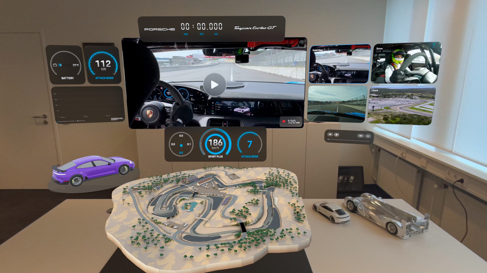
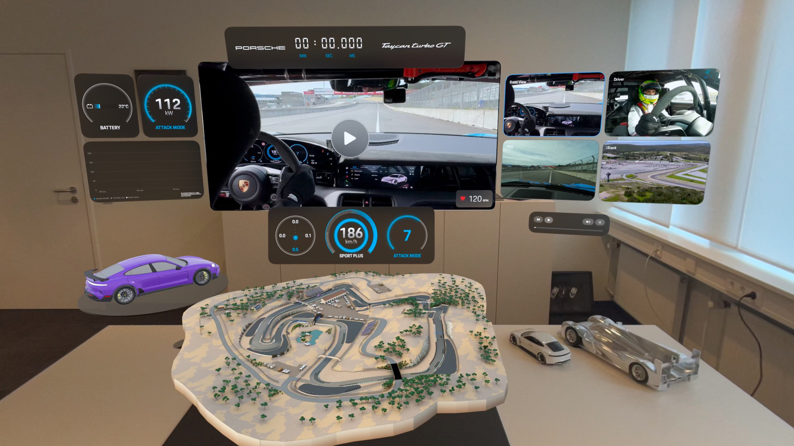

Introduccion
Todos esperábamos ansiosamente la presentación de las nuevas gafas de realidad virtual de Apple en junio de 2023 por parte del CEO de Apple, Tim Cook.... Sin embargo, con dos particularidades. En primer lugar, no saldrían hasta febrero de 2024. Y dos, no son gafas de realidad virtual, sino un visor de "Computación Espacial", una categoría nueva. Un tercer detalle crucial permaneció en secreto... su estancia se limitaría a los Estados Unidos.
Especificaciones
| Capacidad | Display | Chips | Camara | Bateria | Sistema Operativo |
|---|---|---|---|---|---|
| 256GB 512GB 1TB | 23 millones de pixels | CPU de 8 núcleos con 4 núcleos de rendimiento y 4 núcleos de eficiencia | 6.5 megapixels | 2 Horas de bateria | visionOS 2 |
Usos de las AppleVision:
- Entretenimiento inmersivo ver peliculas, jugar videojuegos y experimentar situaciones en 3D en tu entorno.
- Teletrabajo y productividad Tienes a tu alcance una oficina virtual, multitarea espacial, y colaboracion remota.
- Diseño y creatividad Mediante la manipulación y visualización en tiempo real de prototipos 3D, se potencia la creatividad y el diseño.
- Realidad Aumentada para Tareas Cotidianas Impartir información y apoyo técnico sobre el mundo real para simplificar las actividades cotidianas.
- Comunicación y Redes Sociales Hacer videollamadas inmersivas y participar en interacciones sociales dentro de entornos virtuales.
- Aprendizaje y Educación Ejecutar simulacros didácticos y tours virtuales para potenciar el entendimiento y el aprendizaje.
- Fotografía y Video Espacial Retratar y recrear imágenes y vídeos espaciales en un ambiente tridimensional.
- Salud y Bienestar Usar entornos inmersivos para meditación, mindfulness y entrenamiento físico.
- Interacción Natural e Intuitiva Manejar el aparato a través de los ojos, gestos y órdenes de voz, evitando la necesidad de controles físicos.
Historia y Evolucion
El Apple Vision Pro es un nuevo dispositivo que combina tecnologías de visualización e interacción inmersiva, reemplazando y mejorando dispositivos antiguos. Mejora la calidad de los monitores, televisores y dispositivos como iPad y MacBook al incluir pantallas virtuales y espacios de trabajo en 3D. Este nuevo dispositivo combina realidad aumentada y virtual, superando a Google Glass, Microsoft HoloLens y Oculus Rift. Ofrece una mejor calidad visual, no necesita controladores físicos y tiene usos más amplios. Sustituye sistemas de videollamadas convencionales por entornos 3D inmersivos, mejora la experiencia de cine en casa y de simuladores educativos con experiencias personalizadas y realistas. El Apple Vision Pro es una opción más moderna y cómoda en comparación con los cascos VR antiguos. Con un diseño ergonómico, procesamiento avanzado gracias al chip M2 y pantallas de alta resolución, este dispositivo también cuenta con un sistema de control intuitivo basado en ojos, gestos y voz, todo dentro del ecosistema Apple.
Ventajas y Desventajas
| Ventajas | Desventajas |
|---|---|
| Este dispositivo de alta calidad ofrece una experiencia avanzada que combina realidad virtual y aumentada, permitiendo una inmersión total en entretenimiento y productividad. | Precio elevado: Es un dispositivo caro, lo que puede limitar su accesibilidad para la mayoría de los usuarios (se estima que su precio inicial es de $3,500 USD). |
| Calidad visual superior: Las pantallas micro-OLED tienen una resolución muy alta que ofrece imágenes nítidas y detalladas. | La batería tiene una duración limitada de alrededor de 2 horas cuando se usa sin estar conectada a una fuente de energía, lo que puede limitar su uso prolongado. |
| Interfaz fácil de usar: Se controla con los ojos, gestos de las manos y comandos de voz, sin necesidad de usar controladores físicos adicionales. | El casco de Apple puede resultar pesado o incómodo para algunos usuarios durante mucho tiempo, a pesar de que se ha trabajado en su diseño ergonómico. |
| La multitarea espacial te ayuda a organizar varias aplicaciones en un entorno tridimensional, lo que facilita la productividad y la gestión de espacios virtuales creados a tu gusto. | El ecosistema cerrado del dispositivo de Apple puede tener limitaciones para aquellos que no usan sus productos, ya que su compatibilidad con otros sistemas puede verse reducida. |
| Conexión sencilla con iPhone, iPad y Mac para una experiencia fluida y familiar con el ecosistema de Apple. | Este producto puede resultar más atractivo para profesionales y amantes de la tecnología en lugar de para un público más amplio, lo que podría hacer que su popularidad crezca lentamente. |
| El producto puede tener una audiencia limitada al principio, ya que se enfoca principalmente en profesionales y entusiastas de la tecnología, lo que podría retrasar su aceptación generalizada en poco tiempo. | Para sacar el máximo provecho de este software, se necesita que exista un grupo de aplicaciones compatibles. Al principio, es posible que no haya muchas opciones disponibles. |
| Avanzado audio espacial: Proporciona una experiencia de audio envolvente que cambia el sonido dependiendo de la ubicación de los elementos virtuales en el ambiente. | El uso de cámaras, sensores y seguimiento ocular en dispositivos puede plantear preocupaciones sobre la privacidad y la recopilación de datos personales del usuario. |
Imagenes del Producto
 
